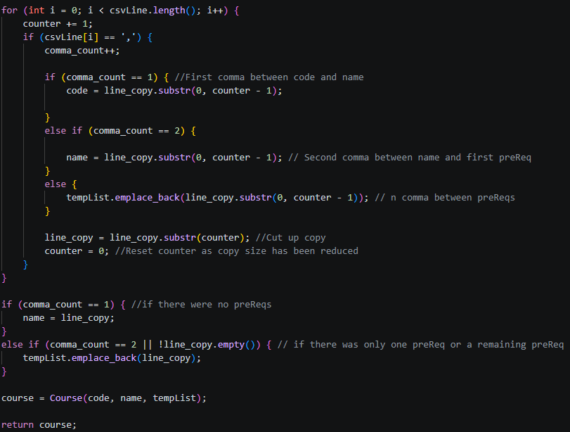
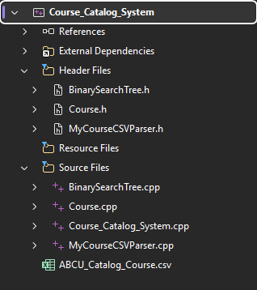

Data Structures and Algorithms (Narrative)
About the Project
This artifact is a course catalog system.
This project was created over a year ago in CS: 300 – DSA: Data Structures and Algorithms.
The system uses a particular data structure to hosts, store course objects, and with the intended purpose of interfacing with a school.
The program should be able to print a sorted list of all the courses,
store the courses in a specific object, and be able to search for a course in the data structure.
For more details and direct access to files about this project go here.
Purpose
I’ve included this artifact to showcase growth of my knowledge and ability to utilize the strengths of data structures and algorithms.
Growth in the form of the quality of code and the assessment of motives for a project.
The previous implementation of this project I had selected a Hash Table with a selection sort algorithm to handle catalog system.
In this enhancement, I have swapped the core data structure to a Binary Search Tree (BST). It is a bit interesting comparing these two structures.
A hash table is quicker in terms of access, search, insertion, and deletion. However, sorting a hash table is not exactly a quick implementation;
Sort algorithms also have their own time complexities, and the selection sort is quite slow at O(n^2).
A Binary Search Tree has a consistent log(n) Time complexity between access, search, insertion, and deletion.
It also does not need a supporting sort algorithm. Instead, it is read left to right through its own structure. The time difference between
these sorts is that I utilized a selection sort which is much slower at a time complexity of O(n^2) compared to O(n) of the BST.
One other questionable aspect is the hash in general. The structure’s hash may have collisions, but does the catalog need hashing?
A value of the course objects is the course code. This code is already a unique identifier.
Lastly, some secondary objectives I have for this project are better documentation, structure, and maybe some more functionality.
Which means I will have to revise or make a new evaluation and better modularize the program files.
Reflection
 The process of enhancing the project has taught me the importance of computer science practices and documentation.
The original project is fixed all into one document. A single file handling multiple functions, data objects, and interface quickly bloats.
The code review and my ability to navigate the whole project were inhibited by several hundred lines of code being present at once.
I began my process by properly naming my project and compartmentalizing the functionality and objects of the project.
This immediately enhances the readability of my project.
The process of enhancing the project has taught me the importance of computer science practices and documentation.
The original project is fixed all into one document. A single file handling multiple functions, data objects, and interface quickly bloats.
The code review and my ability to navigate the whole project were inhibited by several hundred lines of code being present at once.
I began my process by properly naming my project and compartmentalizing the functionality and objects of the project.
This immediately enhances the readability of my project.
My next actions were converting the system’s internal data structure.
While I keep the overarching concept of functionality, the literal implementation requires an entire replacement.
There is no need to keep the hash table, hash function, and the selection sort algorithm.
I replaced them with a binary search tree which does not need a hash nor a sort algorithm as it can be read in a sorted order.
Once rebuilt, I tie the background functionality to the terminal interface so that a user can use the system.

Another aspect I came to realize that needed to be tweaked was my custom csv parser.
The project previously required that I make one for the project. In my review, I realized that I implemented an antipattern for my design.
I would edit the iterator/conditional value in the loop itself while editing the data I was actively reading.
My new parser uses a copy and avoids modifying the conditional values within the loop.
The documentation that coincides with the base project is about the technical reasons and potential of data structures and solutions.
There was little support in how the project was actually implemented just that it used a certain structure and algorithm with the reasons why.
I also did not upload the data. For some reason, I forgot the data that was used to test the project.
In the end, this project was not a state to be recreated.
Luckily, I managed to recover the data. For my portfolio and the future, I will avoid these mistakes.
How To
This project was created in visual studio, so this will adhere to said IDE.
Instructions
- Create an empty project that using the console app template.
-

Copy the files into the project. This can be done by copying the text into created files or importing. Make sure it builds properly.
.h files goes to header folder, the rest go into the source folder including the csv file (the data).
- Build and Run the program.
Welcome to the course planner.
Option 1: Load Courses from file.
Option 2: Print Course List
Option 3: Print a specific Course.
Option 4: Remove a specific Course.
Option 9: Exit
What would you like to do?
The program includes a menu. Start with loading the csv file, Option 1 (Enter the corresponding number).
At this point you can now use the other options.
Option 2 will print all the information in a sorted manner. This is only possible when the data is loaded.
Option 3 will prompt the user for a course code to search in the data structure. For example, "CSCI300". Once inputted, if it exists, it will return a course.
Option 4 will prompt the user for a course code to delete from the data structure. Once inputted, if it exists, it removes and returns a course.
Option 9 will safely exit the program.
Use the last option to exit the program when done.
Jump to Top of the Page.